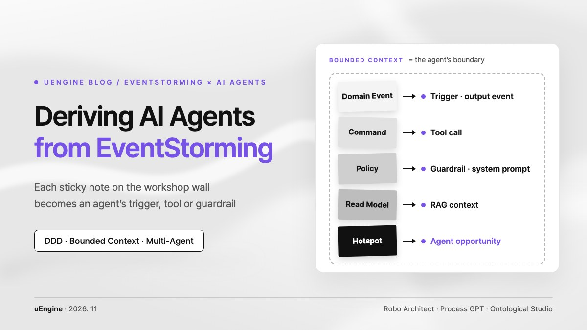

Deriving AI Agents from EventStorming

We are publishing our report, “Identifying AI Agents and Innovating Processes with EventStorming and Domain-Driven Design.” It walks through how the sticky notes placed in an EventStorming workshop carry over into an AI agent’s triggers, tool calls, guardrails, knowledge base and boundaries of responsibility, which bottlenecks should get an agent first, and finally the enterprise adoption roadmap and its realistic limits.
- Overview and research trends
- Mapping EventStorming artifacts to AI agent architecture
- Diagnosing process bottlenecks (hotspots) and prioritizing agent adoption
- Multi-agent system design and a five-stage enterprise roadmap
- Business process innovation benefits and technical limits
- Conclusion
- Putting it into practice with uEngine products and services
1. Overview and Research Trends: The Rise of DDD- and EventStorming-Based AI Agent Modeling
The technical maturity of generative AI and large language models (LLMs) is accelerating the shift beyond simple question-answering assistants toward agentic workflows and multi-agent systems (MAS) that autonomously plan complex business workflows and call tools to execute them1. Yet attempts to deploy intelligent agents into real enterprise processes keep running into structural obstacles4. The cause is less a lack of general reasoning ability in the models themselves than system-level defects that stem from missing company-specific domain knowledge and poorly defined work boundaries4. An LLM without domain context behaves in ways that look plausible on the surface but violate actual business rules and invariants, and in multi-agent environments unclear ownership, data leaking across contexts and unexpected coupling have been shown to reproduce software engineering’s classic ‘Big Ball of Mud’ anti-pattern at the agent layer2.
To remove this bottleneck, academic researchers and industry architects are adopting domain-driven design (DDD) and its hands-on analysis technique, EventStorming, as core tools for identifying AI agents and engineering agent systems1. DDD’s bounded context and EventStorming’s event-driven analysis provide an ideal engineering foundation for fixing each autonomous agent’s cognitive boundary and for establishing asynchronous collaboration contracts between agents1.
In academia, framework studies that systematize scalable multi-agent architectures from the outputs of EventStorming workshops continue to be published1. In enterprise architecture practice, Amazon Web Services (AWS) has demonstrated a method that splits large-scale processes spanning flight operations and the customer journey into bounded contexts, derives a dedicated AI agent for each, and builds a collaboration topology among the agents for disruptions such as flight cancellations7. Global digital transformation consultancies such as Orium and Composable have also applied EventStorming to business process reengineering (BPR), establishing and fielding practical frameworks that diagnose manual-work bottlenecks and derive priorities and execution roadmaps for intelligent agent adoption5.
2. How EventStorming Artifacts Map to AI Agent Architecture
EventStorming is a collaborative technique for visually modeling the flow of events in a business domain along a timeline that runs from left to right6. The standard visual artifacts produced in the workshop correspond strictly one-to-one with the building blocks of a multi-agent system: triggers, tool-call interfaces, system-prompt guardrails, persistent state stores and more4.
A domain event is a business-relevant fact that has already happened in the system, written on an orange sticky note6. In an agentic architecture, a domain event either acts as the asynchronous trigger (input event) that starts an agent, or becomes the result message (output event) that an agent publishes to a distributed message bus after completing a piece of reasoning and work6. This is the foundation of the communication interface that lets individual agents interact in a loosely coupled way, without direct dependencies, in an event-driven architecture (EDA)6.
A command represents a user’s intent or a system’s work instruction to change system state, shown on a blue sticky note6. In an agent system, a command becomes the explicit task goal an agent must complete and the specification of a tool call (tool execution / function calling) that invokes external tools and APIs4. User-initiated commands are execution instructions derived from an operator’s or customer’s natural-language prompt, while system-triggered commands are backend transactions invoked automatically in response to an event from the previous step6. Policy-driven commands, triggered by business rules, are actions an agent executes after judging on its own whether their conditions are met, and invariant-enforcing commands act as interceptors that validate an agent’s output in advance so it cannot compromise system integrity6.
A business policy, written on a lilac sticky note, expresses a reactive causal rule: “whenever an event occurs, run a given command”9. In agent engineering, policies translate directly into system prompts, conditional routing rules and guardrails that block model hallucination and drift4. Business rules stated on the EventStorming board act as clear constraints when an LLM generates code or makes autonomous decisions4. For example, once a policy states that users cannot rate their own posts, the LLM reflects that rule and produces a specification that includes an explicit HTTP 403 Forbidden response or blocking logic for the prohibited case4.
A read model, on a green sticky note, is the set of information an actor consults when making a decision; it maps to the RAG (retrieval-augmented generation) knowledge base, vector database indexes and runtime memory views an AI agent uses while reasoning6. An aggregate, grouped in yellow, is the unit that guarantees the transactional integrity of state changes, and it defines the scope of data an agent may write to and persist (state persistence)2.
A bounded context is the logical boundary within which the ubiquitous language keeps a single business meaning2. In multi-agent design, a bounded context takes one of two architectural forms2. The first is the cognitive agent style, which models the context itself as a single intelligent agent with its own expertise and prompts; the second is the workspace style, in which many fine-grained specialist agents interacting inside the context share a common domain model2. Both act as isolation walls that keep agents from intruding directly into domains they are not authorized for or leaking data indiscriminately2.
| EventStorming artifact | Visual notation (color) | Meaning in domain engineering | Corresponding AI agent architecture element |
|---|---|---|---|
| Domain Event | Orange | A fact that has already happened in the domain | Asynchronous agent trigger (input) and the completion message the agent publishes (output)6 |
| Command | Blue | An instruction that causes a state change, and the actor’s intent | Agent task instruction, API parameters, tool call (tool execution)4 |
| Policy (Reactive Rule) | Lilac | Conditional, reactive business rules and constraints | Agent system prompt, conditional routing, guardrail constraints4 |
| Read Model | Green | Information views and data projections needed for decisions | RAG retrieval context, runtime in-memory state, data lookup views6 |
| Aggregate | Yellow (group) | The smallest unit of transactional consistency and state change | Persistent state store the agent manages, and the scope of its write permissions2 |
| Actor / Agent | Small yellow | The party that performs work in the system | Autonomous AI agent or human operator (human-in-the-loop)6 |
| External System | Pink | Third-party service or legacy system outside the domain | External SaaS and legacy core-system APIs the agent must integrate with6 |
| Hotspot | Red / neon pink | Friction, delays, bottlenecks, open questions, risks | Prime candidate for automation and process innovation through agent intervention5 |
| Bounded Context | Outer boundary line | The limit within which a ubiquitous language and domain model apply | Area of responsibility of a single cognitive agent, or a collaborating multi-agent team2 |
Table 1. EventStorming artifacts and the AI agent architecture elements they map to
3. A Framework for Diagnosing Process Bottlenecks (Hotspots) and Prioritizing AI Agent Adoption
The most important value of bringing EventStorming into business process innovation and AI adoption analysis is that it exposes the company’s ‘as-is’ reality without embellishment5. Formal process diagrams and internal policy documents describe only idealized workflows with the exceptions removed, whereas an EventStorming session with diverse stakeholders lays bare the manual workarounds, system gaps and informal collaboration that actually happen on the ground5.
As participants validate the timeline and trace cause and effect between domain events, red or neon-pink hotspot stickies are placed wherever they disagree or delays keep recurring9. These hotspots typically cluster around delays in manually processing unstructured data, manual handoffs over Excel or email because departmental systems are not connected, implicit decisions that rely only on one person’s experience and were never turned into rules, and cognitive overload where people must cross-check several monitors5.
In agent-centric EventStorming analysis, each hotspot cluster is examined to see whether an intelligent agent could observe the situation at that point of friction, decide with the context in mind, and act appropriately5. Bottlenecks that meet these conditions are immediately reclassified as green-sticky ‘agent opportunities’5.
Not every hotspot identified, however, is a good fit for an AI agent5. Work driven by structured data and deterministic business rules is better handled, in both cost and stability, by conventional API integration or RPA (robotic process automation); conversely, areas with extremely high regulatory risk or enormous costs of failure should be excluded from full autonomy5. Companies therefore need to choose the technical approach carefully, based on whether the work is deterministic, what form the data takes, and how much risk can be tolerated5.
| Automation type | Decision complexity | Form of data | Tolerance for failure risk | Main technology stack | Typical business areas |
|---|---|---|---|---|---|
| Traditional rules and RPA | Deterministic | Structured data (DB records, standard CSV) | Very low (errors not acceptable) | Enterprise workflow engines, ETL scripts | Account provisioning, simple data migration, fixed-amount approvals on structured data |
| Intelligent AI agents | Contextual and adaptive (heuristic) | Unstructured text, complex system state | Medium (guardrails and human intervention can be designed in) | LLMs, LangGraph, multi-agent frameworks | Assisting unstructured claims review, predicting and responding to supply-chain bottlenecks, re-planning complex journeys |
| Fully human (manual) | Highly strategic and political judgment | Tacit knowledge, complex political interests | Extremely low (legal and ethical accountability is concentrated) | Expert workspaces, internal review and approval lines | Final approval of large credit reviews, reorganizations, strategy for new domains |
Table 2. Choosing an automation type by the nature of the work
At the prioritization stage, the severity of the friction is cross-analyzed against implementation risk, and the first pilot is a single task that causes the business real pain while its system risk stays controllable (high impact, low risk)5.
4. Designing Multi-Agent Systems (MAS) and a Five-Stage Roadmap for Enterprise AI Adoption
Once domain events, bounded contexts and agent opportunities are identified, they are turned into a distributed architecture on LangGraph, CrewAI, AutoGen, cloud-based runtime services and the like7. The core principle of multi-agent system design is to confine each agent’s responsibility strictly within the boundary of a specific bounded context2.
For example, if a complex airline operations and travel management domain is built as one large AI model, flight scheduling, fare policies and passenger compensation rules collide inside a single context, which easily leads to hallucination and loss of control2. Applying DDD principles instead isolates the system into clear bounded contexts—flight operations, reservations and customer service—each staffed by a dedicated agent specialized for that context7.
In a disruption scenario where bad weather causes mass cancellations, the flight operations agent publishes a cancellation-confirmed event, the reservation agent receives it and publishes an event for finding seats on alternative flights, and finally the customer service agent gives passengers their new itinerary and hotel vouchers, so the agents work together seamlessly7. Each agent is responsible only for its own domain’s ubiquitous language and invariants, and communication between contexts happens asynchronously through predefined domain event interfaces2.
Figure 1. In the cancellation scenario, the agent of each bounded context collaborates through domain events
To embed such multi-agent systems across the organization, industry applies a five-stage execution roadmap (the 5-Stage Agentic Roadmap)5.
- Align — Domain experts, software developers and AI engineers join a big-picture EventStorming session to surface raw events and visualize the end-to-end flow of work5.
- Prioritize — The agent opportunities found in hotspot clusters are assessed for business impact and risk, and exactly one core pilot task is chosen5.
- Design — An Architecture on a Page is written, specifying the trigger and output events the agent will handle, the external APIs and tools it may access, the RAG knowledge base schema, and the approval points that require human intervention4.
- Build — A lightweight agent is developed on a modern framework such as LangGraph or CrewAI, observability tooling is connected, and a minimal deployment is made against real operational data5.
- Iterate & Scale — Operational data is evaluated on a four-week cycle, prompts are fine-tuned, and agents that have proven themselves are gradually extended and linked into adjacent bounded contexts5.
| Roadmap stage | Key activities | Artifacts | Engineering milestones and outcomes |
|---|---|---|---|
| 1. Align |
|
|
Organization-wide shared understanding of enterprise processes and a single mental model8 |
| 2. Prioritize |
|
|
First agent implementation target with the highest odds of success and ROI5 |
| 3. Design |
|
|
A system contract the engineering team can start implementing immediately4 |
| 4. Build |
|
|
An initial AI agent deployed in production, processing real data5 |
| 5. Iterate & Scale |
|
|
An enterprise MAS ecosystem that collaborates autonomously across departmental boundaries7 |
Table 3. Five-stage roadmap for enterprise AI agent adoption
5. Business Process Innovation (BPR) Benefits and Current Technical Limits
What EventStorming delivers
The signature result of using EventStorming as a combined tool for business process innovation and AI adoption is uncovering the tacit knowledge hidden inside the organization8. A company’s core competitive strengths and its real points of friction live not in documented manuals but in practitioners’ everyday habits and experience8.
EventStorming works as a kind of organizational-anthropology probe, drawing out the manual workarounds and implicit exception-handling rules that staff have informally maintained and turning them into an explicit visual model8. This makes it possible to plan agents that solve the real problems actual users face5.
And because business staff, developers and AI engineers share the same visual model, departmental silos dissolve and the requirement mismatches that surface late in projects are cut off at the source5. Even non-technical staff can clearly understand, and agree on, when an agent steps in and at what point it must hand a decision to a person for approval, simply from where the sticky notes are placed5.
The domain boundaries and policy stickies clarified through EventStorming also give the LLM precise context, preventing the architectural debt of generating code outside the system’s scope and keeping hallucination-driven malfunctions within a controllable range4.
Limits and risks in practice
There are, however, clear technical limits and organizational risks that must not be overlooked in practice5. The ‘cold-start’ problem of having to come up with domain events in front of a blank wall at the start of a workshop causes participants considerable psychological resistance20. AI assistants such as Qlerify and StormSpace now generate an initial event board automatically, but if participants sink uncritically into the model’s draft, anchoring bias can set in and the company’s unique exception handling and domain specifics get lost20.
Another major cause of failure is that an organization which has uncovered vast inefficiencies through EventStorming is easily tempted to automate the entire process with multiple agents at once, in a big-bang approach5. As agent autonomy grows, system-wide unpredictability, token costs and debugging complexity increase exponentially, so an incremental approach that first validates a lightweight pilot on a single hotspot is essential5.
Most important of all, the essential judgment of domain modeling cannot be replaced by AI21. AI tools can help order events or draft API specifications, but strategic decisions—which bounded context is the real boundary of business ownership, which aggregates must be protected for business reasons, which domain terms should become the standard—still require the insight and judgment of domain experts21. In addition, the regulatory violations and legal liability that can arise when human approval (human-in-the-loop) guardrails are not properly designed into high-risk decision points are what to guard against most carefully when building agent systems5.
6. Conclusion: Where a Domain-Engineered Agentic Enterprise Should Aim
Using EventStorming and domain-driven design to identify AI agents and innovate existing processes is not a mere academic hypothesis; it is a core current of modern software engineering, systematically validated by global cloud vendors, academic researchers and enterprise consulting practice1.
What decides the success of an enterprise AI system is not limited to the parameter count or fine-tuning technique of the underlying language model; it depends on how clearly the boundaries and responsibilities of business processes are defined and handed to the agents4.
EventStorming makes the hidden friction and hotspots of real work visible, selects the best opportunities for agents to step in, and establishes boundaries of responsibility and communication contracts between agents through bounded contexts and domain events, providing the most practical engineering analysis framework for building a stable, step-by-step enterprise AI roadmap2.
Organizations that want to innovate their existing processes should therefore avoid adopting agent technology blindly, first face the reality of their domain through EventStorming, and hold to a domain-centric engineering strategy that gradually expands domain-specific agents that are clearly isolated and verifiable under the bounded context principle2.
7. This Roadmap, Already in Products and Services: uEngine
If you have read this far, a natural question follows: "Where can we actually walk this path from EventStorming to agents today?"
uEngine Solutions covers the flow this report describes from start to finish with products: Robo Architect, which designs EventStorming models and bounded contexts and turns them into code; Process GPT and Process GPT Lite, which bind people and agents into one process and run it; and Ontological Studio, which manages the knowledge agents read and the actions they run as an ontology. EventStorming training and adoption consulting come alongside.
The report’s concepts → uEngine product features
| Concept in the report | uEngine product feature |
|---|---|
| Big-picture EventStorming and bounded contexts (roadmap stage 1, Align) |
Robo Architect follows DDD to compose an EventStorming model and Aggregate, Entity and Value Object designs automatically, and separates the domain by bounded context. Use it as a draft that eases the cold start in front of a blank wall; the decision that fixes the boundaries stays with the domain experts. ↗ See it on the product page |
| Implementing commands, domain events and aggregates (roadmap stage 4, Build) |
Robo Architect implements Value Objects, Commands, Events and Aggregates as real source code and tests following DDD principles, commits task by task and shows progress in real time. ↗ See it on the product page |
| Actor: an autonomous agent or a person (human-in-the-loop) |
Process GPT separates what people do from what agents do for each task and assigns a suitable agent from the org chart. On the critical path, where a person must make the final decision, it inserts a human approval step automatically. ↗ See it on the product page |
| Dedicated agents collaborating per bounded context (the cancellation scenario in Figure 1) |
Describe the work in a sentence or two and it builds a BPMN process with lanes for the roles people and agents take, plus an input form for each step. Agents built elsewhere can be registered by their A2A address and assigned to a process step. ↗ Building a collaborative process ↗ Registering A2A agents |
| Policy: conditional routing and guardrails | Agents’ branching decisions are pinned to international-standard DMN decision tables and governed by explicit rules. In Process GPT Lite’s Agentic BPM (PoC), before anything with lasting effects—sending mail, paying, purchasing—company policy decides among run automatically, run and record, approve first, or block, and an AI model never decides whether to approve. ↗ DMN rules ↗ Policies and guardrails |
| Deterministic work belongs to rules and code (choosing the automation type, Table 2) |
The risk of discretionary LLM execution, where the same request can take a different path each time, is reduced by solidifying the verified path. The first run’s tool calls are recorded and the verified path is fixed as parameterized code, so from the second run on it is code, not AI, that executes. ↗ See it on the product page |
| Read model: RAG retrieval context | Agents read the ontology published in Ontological Studio and answer by following its relationships, and every answer leaves its evidence nodes and relationships on screen (Graph RAG). The same knowledge is offered to other AI agents over MCP. ↗ See it on the product page |
| Command: tool calls and external system integration (an aggregate’s write scope) |
Write the instruction down as a Golden Command and the agent studies the business system’s APIs to create the action, its compensation and its usage policy, then validates them with a dry run. Execution always goes through human approval. Process GPT’s MCP Hub grants permissions per tool rather than per server and can block only the irreversible tools. ↗ Golden Command ↗ MCP Hub |
| Hotspot: measuring the bottleneck (roadmap stages 2 and 5) |
Lead Time Breakdown splits total elapsed time into human decision, agent work and queue wait, and gathers many instances to expose bottlenecks per process definition. The hotspots stuck on the workshop wall can be checked again against operating data. ↗ See it on the product page |
| Observability and token cost (roadmap stage 4, limits in section 5) |
The Execution Profiler links waterfall → task → language model call → tool call as parent and child, and opens each instance’s elapsed time and token cost together. ↗ See it on the product page |
The five-stage roadmap, with uEngine training and consulting
- 1. Align: Part 1 of the CNA/MSA public seminars, “DDD and EventStorming”, is a hands-on session that derives domain events, commands, actors and policies with five-color sticky-note EventStorming. So that executives and practitioners prepare the AX transition in one language, we also run AX Transformation Consulting Training (a management track and a development track).
- 2. Prioritize: The single pilot the report recommends starts from one real piece of work. In the AI Work Class for Your Company, you bring one real task, practice it with Process GPT Lite, and the initial installation in your agreed company environment is included in the course.
- 3. Design: Building on the EventStorming model and bounded contexts drawn in Robo Architect, define the steps agents take and the points where people approve as a Process GPT process.
- 4. Build: Robo Architect takes the domain code and tests; Process GPT takes agent execution and its records. If you need a team to build with you, Pilot Implementation Consulting helps with fast prototyping and proven deliverables.
- 5. Iterate & Scale: Correct an agent’s work results with natural-language feedback and the change flows into its plan and skills; Lead Time Breakdown then measures the improvement again. When expanding into adjacent bounded contexts, CNA/MSA Consulting works with you from diagnosis to stable operation, with experts and tools (Robo Analyzer and Robo Architect).
As this report concludes, an agent’s success depends not on the size of the model but on how clearly the boundaries and responsibilities of business processes are defined and handed to the agents. The boundaries and responsibilities stuck on the workshop wall have to live on—as Robo Architect’s design model, Process GPT’s processes and policies, and Ontological Studio’s knowledge and actions—for agents to work by the same standard every time.
Each product page — Robo Architect, Process GPT, Process GPT Lite, Ontological Studio — shows the screens and demo videos for each feature. If you want to start a pilot on one of your organization’s hotspots, reach us through Contact Us. Online course material on DDD design is available at MSA School (Korean).
References
- Designing Scalable Multi-Agent AI Systems: Leveraging Domain-Driven Design and Event Storming — ResearchGate
- Agent as Bounded Context — Part 1 — Philipp Kostyra, Medium
- Day-21: Event Storming To Code — Medium
- From Stories to Code: Collaborative Modeling and LLMs — codecentric
- EventStorming for Agentic AI: From Alignment to Action — Orium
- Designing Scalable Multi-Agent AI Systems — DZone
- Transforming Travel: How Domain-Driven Design Unlocks the Power of Agentic AI Systems — AWS Builder Center
- From Sticky Notes to Intelligent Agents — Composable.com
- EventStorming Glossary & Cheat sheet — Domain-Driven Design Crew
- Event Storm - AI Agent Skill — k8mak
- Event Storming — Florian Krämer
- What is Event Storming? A practical guide with example — Rubicon
- EventStorming Cheat Sheet — Xebia
- How developers' role changes with AI — Port.io
- Using EventStorming to prioritize technical and product improvements — Eduardo Matos
- Event Storming and Context Mapping for Data & AI Product Managers — DataChef
- Cloud Native Professional Course Proposal (PDF, Korean) — uEngine Solutions
- MSA School curriculum — MSA School
- The Evolution of AI-Assisted Development — X Gate
- Leveraging the power of Event Storming and AI for domain-driven design — Medium
- Der Synergetic Blueprint revisited – und warum KI alles verändert — codecentric
- StormSpace — collaborative interactive Event Storming — GitHub